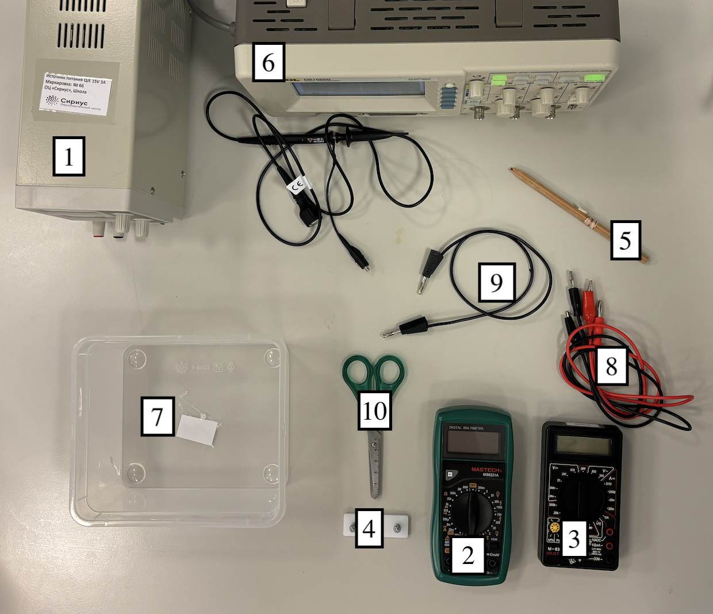
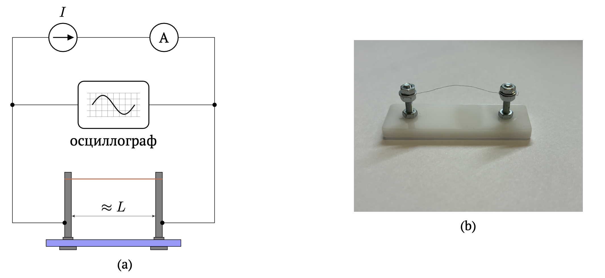
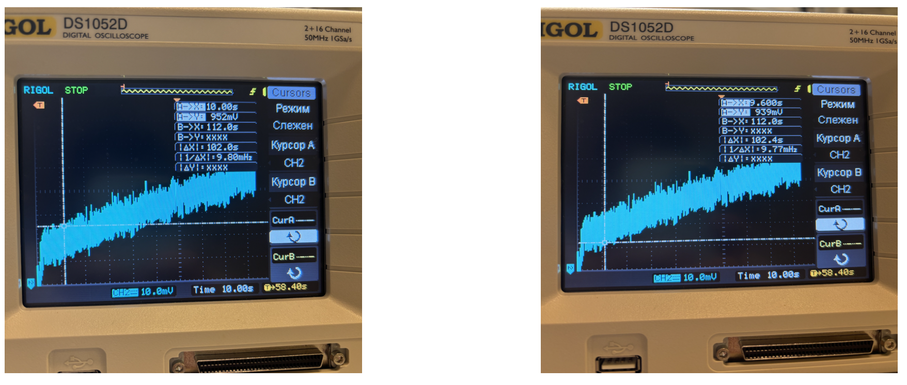
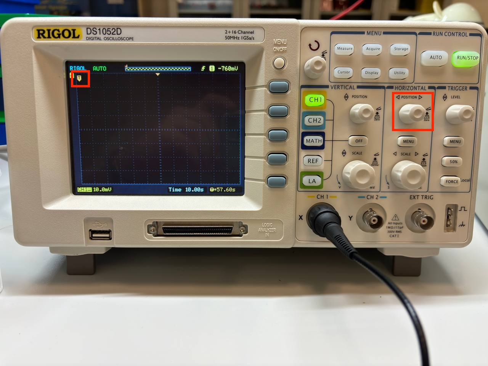
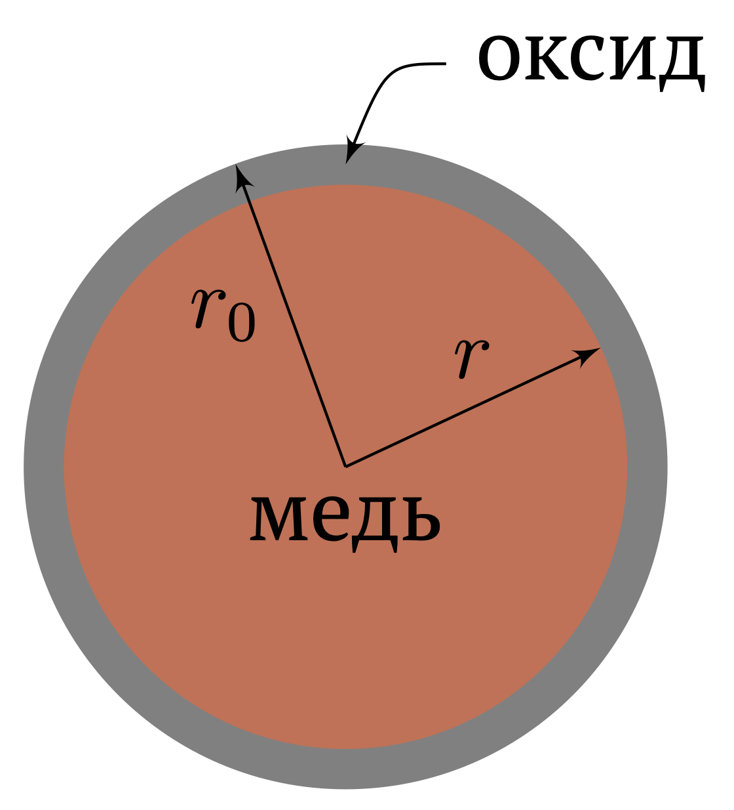

X25 (2025) — English translation
Thermal oxidation is the process of formation of an oxide film on a metal at elevated temperatures in the presence of oxygen. In this problem, oxidation on the copper surface will be studied.
Physical constants: Universal gas constant $R=8.31~\dfrac{Дж}{моль\cdot \mathrm{K}}$. Temperature coefficient of resistance of copper $\alpha = 5.80\cdot 10^{-11}~\dfrac{Ом\cdot м}{\mathrm{K}}$. Molar mass of copper $\mu = 63.5~\dfrac{г}{моль}$ Notation used in the problem: $T$ is the temperature of the wire in Kelvin. $T_0=295~\mathrm{K}$—ambient temperature. Copper resistivity: $\rho (T) = \alpha T$. The power of heat loss into the environment: $P_{out} = \beta S (T- T_0)$, where $S$ is the surface area of the wire, $T$ is its temperature, $\beta $ is the heat transfer coefficient. $r_0=0.05~мм$ — radius of the issued wire. $L$ - wire length. $I$ - current strength through the source. $U_0$ is the voltage on the wire at $t=0$. $U_m$ is the steady-state voltage on the wire (in part A, when oxidation makes a minor contribution). $\rho_{м} = 8920~\dfrac{кг}{м^3}$ - copper density. $c_{м}$ is the specific heat capacity of copper. $r$ is the radius of the conductive part of the wire. Note. All temperatures in this problem are expressed in Kelvin. Note. The wire samples you use for measurements will be of different lengths $L$.
Notation used in the problem:
Note: All temperatures in this problem are expressed in Kelvin.
Note. The wire samples you use for measurements will be of different lengths $L$.
Equipment: DC source Multimeter in voltmeter mode Multimeter in ammeter mode* Measuring stand A piece of copper wire Oscilloscope with oscilloscope wire Container Four banana-crocodile wires Banana-banana wire Scissors *If more current is passed through the ammeter than the mode selected on it suggests, the ammeter may become unusable. NO NEW AMMETERS WILL BE ISSUED. Note. The readings on the screen of the current source are not valid, that is, they cannot be used as experimental data. Use an ammeter to measure the current through the source.
*If more current is passed through the ammeter than the mode selected on it suggests, the ammeter may become unusable. NO NEW AMMETERS WILL BE ISSUED.
Note. The readings on the screen of the current source are not valid, that is, they cannot be used as experimental data. Use an ammeter to measure the current through the source.

To measure voltage versus time, use the circuit as in Figure 1a. It is proposed to fasten the wire as shown in photo 1b.

It may be that you get a noisy signal on the oscilloscope. In this case, within the framework of this task, wherever you are asked to take the dependence of voltage on time from an oscilloscope, do this: take two extreme values in the vicinity of a certain point $U_+$ and $U_-$, and take their average value $U_{avg} = (U_+ + U_-)/2$ as $U$. For example, in Figure 2 the point $U = (952+939)/2 = 945.5~мВ$ should be obtained at $t = 9.8~с$

Note. Place the horizontal trigger (the arrow with the letter T circled in a red frame in the photo below) to the very left position, so the signal will appear on the screen faster.

IMPORTANT! If a current $I>1.5~\mathrm{A}$ flows through the wire, then the copper on its surface is replaced by a non-conducting oxide (as in part B). Therefore, if you passed current $I>1.5~\mathrm{A}$ through the wire for a significant time ($>10~\mathrm{c}$), then it WILL NOT be equivalent in properties to a new one. Further, within the framework of this task, wherever it is proposed to measure something with a wire, it is understood that the measurements must be carried out on a new wire. Please consider the amount of wire used in your measurements wisely; new pieces of copper wire will NOT be issued.
In this part of the problem, the process of heating the wire at low currents (up to $1.5~\mathrm{A}$) is studied, at which, due to the low temperature of the wire, oxidation will make a small contribution. Therefore, within the framework of this part, consider that the geometric dimensions of the wire do not change, and you can not change it between measurements.
Next, for all measurements, cover the wire with a container so that air currents do not affect your measurements. Moreover, the wire should be placed in the middle of the container in order to move it as far as possible from the cracks under the container.
Note. If A7 fails, then use the value $\beta= 350~\cfrac{Вт}{м^2\cdot \mathrm{K}}$ and explicitly indicate this in the solution.
In this part of the problem, the oxidation of copper will be studied. When heated, copper is replaced by a non-conducting oxide, causing the resistance of the wire to increase. However, the thermal properties of the oxide are exactly the same as those of copper, which means the effective area from which heat is transferred to the air does not change.

Carry out measurements in part B according to the following algorithm: Insert a new wire into the measuring stand. Select and indicate the current strength $I_n$ in the range $[2.0;2.6]~\mathrm{A}$ at which you will carry out the measurement. $n$—number of the wire sample being measured. Assemble the circuit as in Figure 1. Set the source to the current $I_n$ selected in step 2 and configure the oscilloscope so that the signal that you will measure in step 7 occupies a significant part of the display. Remove the wire and do not use it for measurements anymore. Insert the new wire into the measuring stand. Measure the resistance of the wire at room temperature $R_n$, using currents less than $100~\mathrm{мA}$ (so that the wire does not heat up). Record the voltage on the wire as a function of time in the range of 0-300 $\mathrm{c}$ or until the wire burns out, with a current through the wire $I_n\in[2.0;2.6]~\mathrm{A}$. Construct a graph of the measured dependence and draw a straight line $U(t) = U_0 +\gamma(I_n) t$ along the initial linear section of the graph. Calculate the numerical value of $\gamma(I_n)$. Remove the wire and do not use it for measurements anymore.
Carry out measurements in part B according to the following algorithm:
The characteristic time obtained in point A2 is short, so consider that the wire at each moment of time is in thermodynamic equilibrium, that is, the process is quasi-static.
The Deal-Grove model is a mathematical model that describes the growth of oxide layers on the surface of a heated metal. According to this model: \[\dfrac{\mathrm{d}X_o}{\mathrm{d}t} = B e^{-E_A/R T}\]where $X_o(t) = r_0-r(t)$ is the thickness of the oxide layer at time $t$; $B$ is a certain constant; $E_A$ - molar activation energy (the minimum amount of energy per 1 mole of a substance that must be available to reagents for a chemical reaction to occur); $T$—wire temperature. This equation holds true as long as the oxide layer is very thin, with a thickness on the order of the thickness of the oxide film on copper wire stored at room temperature.
Source: https://pho.rs/p/4181